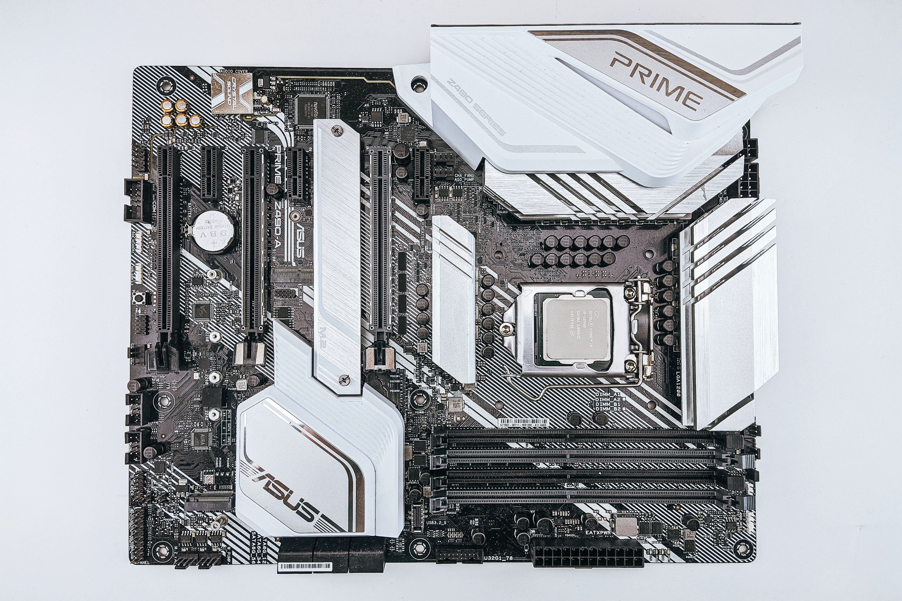

A desktop PC consists of several key components that work together to provide computing power and functionality. These components can be broadly categorized into the central processing unit (CPU), memory, storage, motherboard, graphics processing unit (GPU), power supply unit (PSU), and peripherals.
Central Processing Unit (CPU)
The CPU serves as the brain of the computer, executing all the programs that we all use on a daily basis. The CPU's performance is measured by its clock speed and the number of cores it has.
Random Access Memory (RAM)
Memory, or RAM (Random Access Memory), temporarily stores data that the CPU needs to access quickly. It allows for faster data retrieval compared to storage devices. The more RAM a computer has, the more applications and data it can handle concurrently.
Storage
Storage devices store data such as files. Hard Disk Drives (HDDs) provide high-capacity storage at a lower cost, while Solid-State Drives (SSDs) offer faster data access and retrieval speeds.
Motherboard
The motherboard acts as the central hub, connecting all the components. It houses the CPU, RAM slots, storage connectors, expansion slots, and other peripheral connectors.
Graphics Processing Unit (GPU)
The GPU is responsible for rendering and displaying images, videos, and graphics. It offloads visual processing tasks from the CPU, enhancing performance in gaming and multimedia applications.
Power Supply Unit (PSU)
The PSU supplies power to all components, converting electrical energy from the wall outlet into usable power for the computer.
Peripherals
Peripherals such as the keyboard, mouse, monitor, speakers, and printers are connected to the desktop PC through ports or wireless connections, enabling input and output functionality.
These components collectively enable a desktop PC to perform various tasks, from everyday computing to gaming, content creation, and more. The performance and capabilities of each component can be tailored to suit specific needs and preferences.
